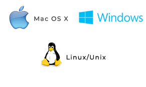

Git (le système de contrôle de version) et GitHub (la plateforme d'hébergement et de
collaboration). L'objectif est d'amener le lecteur de zéro à un workflow collaboratif complet, en expliquant
chaque commande et chaque étape.
Pourquoi apprendre Git ?
Git permet de garder un historique fiable des modifications, d'expérimenter sans risquer de perdre le
travail (grâce aux branches), et de collaborer efficacement. GitHub facilite la revue de code, l'intégration
continue (CI), et le partage public/privé.
2. Qu’est-ce que Git ?
Git est un système de contrôle de version distribué. Contrairement à certains systèmes
centralisés, chaque développeur possède une copie complète du dépôt (history + contenu) sur sa machine.
Concepts clés
Commit : photographie de l'état du projet à un instant T.
Branch (branche) : ligne de développement isolée.
Merge (fusion) : intégration d'une branche dans une autre.
Remote (dépôt distant) : version en ligne du dépôt (ex. : GitHub).
Le cycle de vie simplifié :
Modifier des fichiers → git add pour indexer → git commit pour enregistrer →
git push pour envoyer au remote.
3. Qu’est-ce que GitHub ?
GitHub est une plateforme qui héberge des dépôts Git et y ajoute des fonctionnalités collaboratives : issues,
pull requests, actions CI, pages pour hébergement statique, etc.
Fonctionnalités importantes
Pull Requests : mécanisme de revue et de demande de fusion.
Option 2 : Installateur officiel depuis git-scm.com.
Linux
Ubuntu / Debian
sudo apt update
sudo apt install git
Fedora / CentOS
sudo dnf install git
Arch Linux / Manjaro
sudo pacman -S git
Vérifier : git --version
Peu importe l’OS, les commandes Git suivantes sont identiques. Seules diffèrent les étapes
d’installation.

6. Premiers pas avec Git — commandes de base
6.1 Configuration initiale
# Configurer votre nom (affiché dans les commits)
git config --global user.name "Votre Nom"
# Configurer votre e-mail (affiché dans les commits)
git config --global user.email "vous@exemple.com"
# Optionnel : afficher la configuration courante
git config --list
Explication :
Ces paramètres renseignent l'auteur des commits. L'option --global applique la configuration
pour tout l'utilisateur sur la machine. Sans ces paramètres, Git vous demandera de les définir avant de
committer.
Note : Pour un projet professionnel, on peut configurer des valeurs locales (sans
--global) dans le dépôt seulement : git config user.email "autre@exemple.com".
6.2 Créer un dépôt local
# Créer un dossier et initialiser Git
mkdir mon-projet
cd mon-projet
git init
# Résultat : création d'un dossier .git qui contient l'historique local
Explication :
git init crée un dépôt Git dans le dossier courant. Cela n'envoie aucune donnée en ligne —
vous avez un dépôt local prêt à recevoir des commits.
6.3 Ajouter des fichiers et faire un commit
# Ajouter des fichiers pour suivi (staging)
git add index.html style.css
# Enregistrer ces changements dans l'historique (commit)
git commit -m "Initialisation du projet : ajout des fichiers index et style"
# Vérifier l'état du dépôt
git status
# Voir l'historique des commits
git log --oneline --graph --decorate
Explication :
git add place des modifications dans l'index (staging area).
git commit enregistre les modifications indexées dans l'historique local comme un commit.
git status montre les fichiers modifiés, indexés ou non.
git log permet de consulter l'historique ; les options --oneline et
--graph rendent l'affichage plus lisible.
Erreur courante : Faire git commit sans git add n'enregistrera pas
vos dernières modifications. Vérifiez toujours git status.
6.4 Branches — créer et basculer
# Lister les branches locales
git branch
# Créer une nouvelle branche
git branch feature-accueil
# Basculer sur la branche
git checkout feature-accueil
# Alternative (crée et bascule en un seul pas)
git checkout -b feature-contact
Pourquoi les branches ?
Les branches permettent d'isoler une nouvelle fonctionnalité ou une correction de bug. La branche
main (ou master) reste stable pendant que vous travaillez sur une branche
secondaire.
6.5 Fusionner une branche
# Se placer sur la branche de destination (ex: main)
git checkout main
# Fusionner la branche feature-accueil dans main
git merge feature-accueil
# Résoudre conflits si nécessaire
# Après résolution : git add
# Puis : git commit (pour terminer la fusion si non automatique)
Conflits :
Si deux personnes ont modifié la même portion de fichier, Git signale un conflit. Il faut ouvrir le
fichier, choisir la version souhaitée, puis ajouter et committer la résolution.
6.6 Lier un dépôt distant et pousser
# Ajouter un remote nommé 'origin' (ex. GitHub)
git remote add origin https://github.com/utilisateur/mon-projet.git
# Renommer la branche par défaut (optionnel)
git branch -M main
# Envoyer la branche 'main' vers origin
git push -u origin main
# Pour pousser une branche nommée feature-xyz
git push origin feature-xyz
Explication :
git remote add origin ... lie le dépôt local à un dépôt distant.
git push -u origin main envoie la branche et définit l'upstream pour faciliter les futurs
pushes/pulls.
7. Mise en place d’un projet Git & GitHub — scénario complet expliqué
Ce scénario illustre toutes les étapes depuis la création locale jusqu'à la mise en ligne sur GitHub et la
création d'une fonctionnalité via branche + pull request.
Étape 1 — Création locale
# Créer un répertoire de projet et initialiser
mkdir projetGit
cd projetGit
git init
# Créer un fichier simple
echo "<h1>Mon premier projet Git</h1>" > index.html
# Suivre et committer
git add index.html
git commit -m "Création du fichier index.html"
Explication :
Ce commit initialise le projet. À partir de maintenant, toute modification de index.html
pourra être tracée dans l'historique.
Étape 2 — Création du dépôt GitHub
Sur github.com : cliquer sur New Repository, nommer le dépôt
projetGit, choisir public/privé, puis créer.
Étape 3 — Lier local → distant
# Ajouter le remote (url HTTPS)
git remote add origin https://github.com/ton-username/projetGit.git
# Renommer branche et pousser la première fois
git branch -M main
git push -u origin main
Note :
Tu peux également utiliser SSH (git@github.com:username/projetGit.git) si tu as configuré une clé SSH pour
GitHub.
Étape 4 — Développer une nouvelle fonctionnalité
# Créer une branche de fonctionnalité
git checkout -b feature-contact
# Ajouter une nouvelle page
echo "<p>Contactez-nous</p>" > contact.html
# Ajouter et committer
git add contact.html
git commit -m "Ajout de la page contact"
# Pousser la branche sur GitHub
git push origin feature-contact
Explication :
La branche feature-contact est désormais en ligne et prête à être examinée via une Pull
Request sur GitHub.
Étape 5 — Créer une Pull Request (PR)
Sur l'interface GitHub : comparer la branche feature-contact avec main, ouvrir une
PR, ajouter une description, assigner des réviseurs et lancer la revue.
Étape 6 — Fusionner la PR
Après approbation, fusionner via l'interface (merge). Ensuite récupérer les changements localement :
# Retourner sur main et récupérer les modifications depuis origin
git checkout main
git pull origin main
8. Bonnes pratiques de travail collaboratif
Branches et conventions
Adoptez une convention claire : feature/..., fix/..., hotfix/..., etc.
Ex : feature/ajout-accueil.
Messages de commit
Rédigez des messages concis mais descriptifs : première ligne courte (<50 char), puis description détaillée
si nécessaire.
Fichiers sensibles
Utilisez .gitignore pour exclure les secrets, dossiers temporaires et dépendances
volumineuses.
# Exemple .gitignore basique
node_modules/
.env
.DS_Store
*.log
/build/
dist/
Astuce sécurité : Si un secret est commit accidentellement, invalidez-le (par ex.
régénérer la clé) — ne comptez pas sur un "git rm" seul pour résoudre le problème.
9. Exemple complet de workflow collaboratif (pas à pas)
Résumé du workflow
Cloner le dépôt : git clone
Créer une branche locale : git checkout -b
Faire des commits atomiques (un seul objectif par commit)
Pousser la branche : git push origin ma-branche
Ouvrir une PR sur GitHub pour revue
Corriger les remarques, mettre à jour la PR
Fusionner et supprimer la branche distante
# Exemple concret
git clone https://github.com/organisation/projet.git
cd projet
git checkout -b feature/amelioration-style
# Travailler localement
git add .
git commit -m "feature: amélioration de la mise en page de la page d'accueil"
git push origin feature/amelioration-style
# Ouvrir PR -> Revue -> Merge
Pourquoi des commits atomiques ?
Ils facilitent la revue, la compréhension de l'historique et la possibilité de revenir en arrière sur une
fonctionnalité précise.
10. Conclusion
Git & GitHub sont des outils fondamentaux pour tout développeur moderne. La maîtrise des commandes de
base, la compréhension des branches et la pratique d'un workflow collaboratif permettent de travailler
efficacement en équipe et de maintenir un historique fiable des projets.
Prochaines étapes conseillées :
Pratiquer en créant un dépôt personnel et en simulant PRs.
Apprendre les commandes avancées : rebase, cherry-pick, bisect.
Découvrir GitHub Actions pour automatiser les tests et déploiements.
Annexes — Erreurs courantes et résolution
Erreur : "fatal: refusing to merge unrelated histories"
# Solution (si vous savez ce que vous faites)
git pull origin main --allow-unrelated-histories
Cette erreur survient lorsque l'historique local et distant n'ont pas d'ancêtre commun (ex. :
dépôt distant initialisé avec README). Utiliser cette option avec prudence.
Erreur : "permission denied (publickey)"
# Vérifier la clé SSH locale et l'ajouter à GitHub
# Générer (si besoin)
ssh-keygen -t ed25519 -C "votre_email@example.com"
# Copier la clé publique et l'ajouter à GitHub (Settings > SSH and GPG keys)
cat ~/.ssh/id_ed25519.pub
Erreur : commit non voulu déjà poussé
# Revenir en arrière localement (si non poussé)
git reset --soft HEAD~1
# Si déjà poussé, utiliser revert plutôt que reset pour garder l'historique :
git revert commit_hash
Important : éviter les re-écritures d'historique (git push --force) sur des
branches partagées sans coordination ; cela casse l'historique des autres contributeurs.